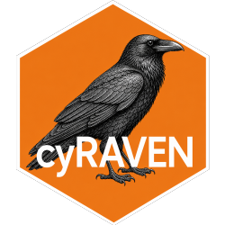

Place a cut on a control channel, and refuse a control that cannot be one
Source:R/fmo.R
control_cut.RdTwo things go wrong with a control-anchored cut, and both were observed on real minus-multiple data before this existed.
Arguments
- control_x
transformed control values in this channel.
- sample_x
transformed sample values in the same channel, used only to check that the control is the dimmer of the two.
- q
the quantile taken where the control is clean. Default
0.995.- k
passed to
tail_threshold().- max_mode_shift
how far above the sample's negative mode the control's may sit, in units of the sample's own robust spread, before the control is refused. Default
1.
Value
a list carrying threshold (NA_real_ where the control is
refused), verdict, and the two candidate cuts.
Details
A FAR QUANTILE RIDES AN ARTEFACT TAIL. The negative population's upper edge
is what the control is for, and q = 0.995 finds it only when the control
contains nothing but that population. A control tube carrying about one
percent of bright events – aggregates, dead cells, a residual stained
population – puts the 99.5th percentile inside that tail rather than at the
edge of the negative. On the cohort this was written for, one channel's
control sat at 1.04 at the 95th percentile and 5.60 at the 99.5th: the cut
moved by four and a half units of a transformed scale, and landed above the
full stain's own 99th percentile, so nothing in any sample would have been
called positive. tail_threshold() is immune to this, because it locates the
negative mode and measures the spread of the half that cannot contain
positives. Taking whichever of the two is lower keeps the quantile where the
control is clean – for a Gaussian negative the quantile is the lower of the
pair, so nothing changes – and falls back to the robust estimate only where
the quantile has left the negative population altogether.
THE CONTROL IS NOT ACTUALLY MISSING THE REAGENT. A minus control must be dimmer in the channel it leaves out. When it is brighter, something is wrong with the tube, the panel sheet, or the unmixing, and anchoring to it raises the cut and deletes a real population. This is not a hypothetical: of twelve channels declared on one minus-multiple tube, five were no dimmer than the full stain and one was brighter at every quantile. Comparing the two negative modes, in units of the sample's own spread, catches that before it reaches a frequency table. A refused control is reported, not silently dropped, and the threshold falls back to the sample's own data.